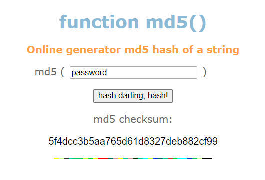
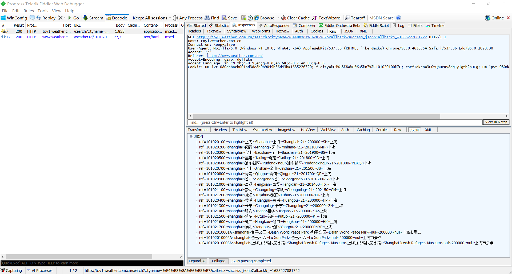
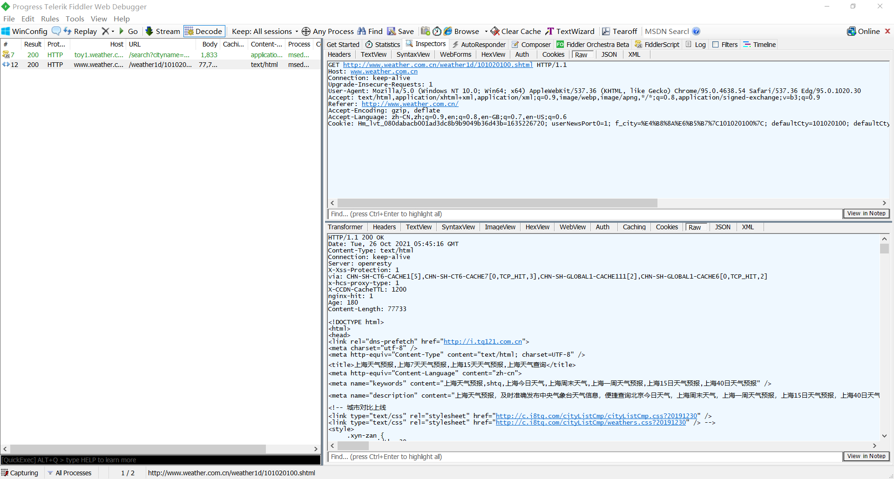
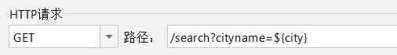
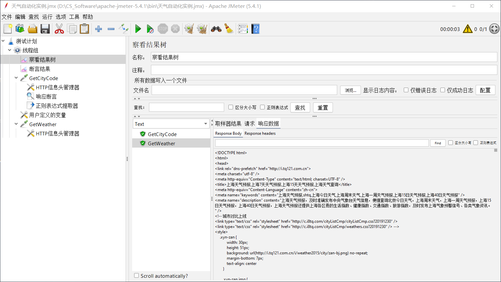
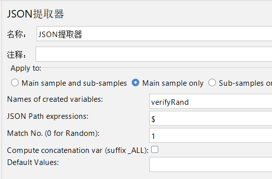
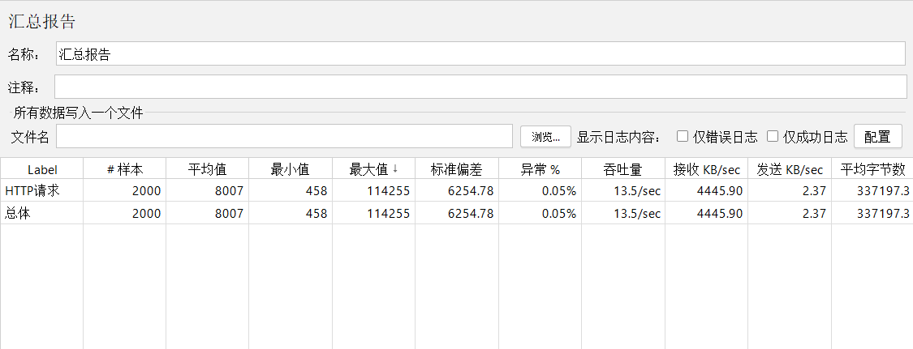

JMeter实践
[TOC]
JMeter 模拟 HTTP 请求
创建测试任务
在 JMeter 中，任何类型的测试都需要先创建线程组，一个线程组可以看作一个测试任务。
（1）添加线程组。用鼠标右键单击“测试计划”，在快捷菜单中单击添加 -> 线程(用户) -> 线程组。
（2）设置线程组。线程组主要包括 3 个参数：
线程数：一个线程代表一个虚拟用户。
Ramp-Up Period(in seconds)：设置线程的启动时长，单位为秒。如果线程数是 100，启动时长为 5s，那么需要 5s 启动 100 个线程，平均每秒启动 20 个线程。
循环次数：每个线程发送请求的次数。如果这个线程组中有 5 个HTTP请求，循环次数为 3 的话，那么一个线程会发送 5×3=15 个 HTTP 请求。如果选中了“永远”复选框，那么所有的线程会无限循环发送请求，直到手动单击工具栏上的停止按钮。
如果用来做功能测试/接口测试，那么应保持默认设置。
模拟网页 MD5 加密
有一个 MD5 在线网站 http://www.md5.cz/。利用它可以对密码进行散列处理。用 Fiddler 对这个网站进行抓包，然后用 JMeter 来实现。具体的操作步骤如下。
（1）启动 Fiddler，打开浏览器，输入 http://ww.md5.cz/。在页面中输入“password”，然后单击按钮“hash darling, hash!”。


能看到浏览器发出的 HTTP 请求报文如下：
1 | POST http://www.md5.cz/getmd5.php |
（2）打开 JMeter，右击线程组->添加->取样器->HTTP 请求，参数按照报文填写：
（3）右击 HTTP请求->添加->配置元件->HTTP信息头管理器，添加 HTTP Header。可以先在 Fiddler 中复制所有的 HTTP Header，然后单击“从剪贴板添加”。由于 JMeter 自动添加 Host，所以不需要手动添加，如果有则需要删除。
（4）右击线程组->添加->监听器->察看结果树。运行JMeter，单击工具栏上的绿色按钮，可以运行脚本。通过结果树可以看到我们发出的 HTTP请求以及 Web 服务器返回的 HTTP 响应。
JMeter 天气接口自动化测试
Fiddler 抓包分析
（1）启动 Fiddler，单击菜单栏中 Rules -> Hide Image Requests。抓包的时候把图片的包隐藏。
（2）打开浏览器，打开 http://www.weather.com.cn/。在“城市名称”中输入“上海”，单击查询。
（3）抓到几十个包，但分析下来主要有两步操作：
获取城市代码。发送一个 GET 请求到 http://toy1.weather.com.cn/search?cityname=%E4%B8%8A%E6%B5%B7&callback=success_jsonpCallback&_=1635227081722 ，“上海”被 URLEncode 后变成了 “%E4%B8%8A%E6%B5%B7”，从这个响应中可以得到上海的地区代码。

获取城市的天气数据。发送一个 GET 请求到 http://www.weather.com.cn/weather1d/101020100.shtml 得到该城市的天气数据。

这两个请求必须带上一个叫“Referer”的 Header，Referer 的作用就是用来追踪来源的。
JMeter 实现参数化
（1）启动JMeter，在线程组下面新建一个 HTTP 请求，将其命名为 GetCityCode。发送一个Get方法的HTTP请求到 http://toy1.weather.com.cn/search?cityname=上海。添加一个HTTP信息头管理器，添加一个 Referer：

（2）添加验证点。选择 GetCityCode 这个 HTTP 请求，右击->添加->断言->响应断言。右击线程组->添加->监听器->断言结果。匹配结果会显示到断言结果中，成功则只显示 HTTP 请求名称，失败则显示 HTTP 名称和没有匹配到的第一项。
（3）使用用户自定义变量。右击线程组->添加->配置元件->用户定义的变量。添加一个变量 city，其值设为“上海”。
在 GetCityCode 中使用这个变量：

这样就实现了参数化，以后修改城市的时候，只要修改用户自定义变量就可以。
正则表达式提取城市地区代码
（1）选择 GetCityCode 这个 HTTP 请求，用鼠标右键选择添加->后置处理器->正则表达式提取器。
通过正则表达式提取器把城市代码提取出来，并且存到变量 citycode，然后把这个变量提供给第二个 HTTP 请求使用。
关联：一个 HTTP 请求使用了另一个 HTTP 请求中的数据，两个请求之间发生了关联。
（2）新建第二个 HTTP 请求，命名为 GetWeather。发送一个 GET 请求到 http://www.weather. com.cn/weather1d/${citycode}.shtml。运行结果如下：

到这里天气接口的简单自动化测试就完成了。
BeanShell
BeanShell 是一个小型的 Java 源代码解释器，具有对象脚本语言特性。其能够动态执行标准 Java 语法，可以通过脚本来处理 Java 应用程序。
BeanShell 使用内置对象 vars 对变量进行存取操作。
vars.get("name")：从 JMeter 中获得变量值。vars.put("key"，"value")：数据存到 JMeter 变量中。
实例：BeanShell 调用自己写的 jar 包进行 MD5 加密
（1）在 Eclipse 新建工程，添加一个 class 文件，代码如下：
1 | package md5; |
将工程导出为一个 jar 文件，取名为 md5.jar。
（2）启动 JMeter，在测试计划中引入这个 jar 包。

（3）在线程组中添加一个 BeanShell 取样器、一个调试取样器和一个查看结果树。
调试取样器中查看变量，可以看到密码被加密。
自动登录禅道
HTTP Cookie 管理器
HTTP 协议本身是无状态的，为了维持登录的状态引入 Cookie 机制。
Cookie 的流程如下：
（1）浏览器发送第一个 HTTP 请求给 Web 服务器，里面包含用户名和密码。Web 服务器验证用户名和密码后，把登录相关的 Cookie 发送给浏览器客户端。
（2）浏览器客户端再一次访问的时候，会带上 Cookie，这样才处于登录状态，否则会被服务器跳转到登录页面。
用 JMeter 来模拟整个登录过程，需要在第一次登录后，用正则表达式提取器把登录相关的 Cookie 提取出来，然后把登录的 Cookie 插入后续的 HTTP 请求中形成关联。
JMeter 中的 HTTP Cookie 管理器可以自动管理 Cookie。如果 HTTP 响应中包含 Cookie，那么 HTTP Cookie 管理器会自动保存这些 Cookie。用户再次访问该站点时，HTTP 请求会自动使用这些 Cookie。一个线程组有自己存储 Cookie 的区域，并且一个线程组只能添加一个 HTTP Cookie 管理器。
选择线程组，用鼠标右键单击添加->配置元件->HTTP Cookie 管理器。
自动登录禅道
（1）启动 Fiddler，启动过滤。在 Filter 选项卡中激活 Filter，并且在 Response Type and size 中选中“Show only HTML”。
（2）打开浏览器，输入 http://127.0.0.1:80/index.php（我部署的禅道地址），然后输入用户名和密码，单击“登录”。
（3）从抓包可以看到，首先用 GET 方法得到一个数字（就是 verifyRand），然后用 POST 方法登录，但是密码是加密后发送给服务器的，Body 中的数据是 account=admin&password=372539499122ad0a7085743c6c322bc8&passwordStrength=1&referer=%2Fzentao%2F&verifyRand=527812645&keepLogin=0&captcha=。
（4）用浏览器的开发工具查看源代码，可以发现一个叫 md5 的 js 包。
查看登录页面的源代码发现加密规则是 md5(md5(password) + rand)，rand 就是上面说的 verifyRand，每次登录请求都会刷新。
1 | $('#loginPanel #submit').click(function() |
（5）重新写一个 jar 包实现禅道的加密，在测试计划中引入这个 jar 包。
1 | package md5; |
（6）选择线程组，添加一个 HTTP Cookie 管理器，用来自动管理Cookie。
（7）选择线程组，添加一个 HTTP 请求默认值，填写的内容如图：
（8）选择线程组，添加用户自定义的变量。
（9）选择线程组，添加一个 HTTP 请求，命名为 Getverify，用来获取随机生成的 verifyRand，
GET http://127.0.0.1/zentao/user-refreshRandom.html。在这个请求下添加一个 HTTP 信息头管理器和一个 JSON 提取器。

（10）选择线程组，添加一个 BeanShell 取样器和一个调试取样器。
（11）选择线程组，添加一个 HTTP 请求，命名为 Login，用来登录禅道。添加一个 HTTP 信息头管理器，不填 Host 和 Cookie。
（12）添加一个察看结果树，运行就可以看到成功登录了。
JMeter 给网站做压力测试
在一台电脑用 JMeter 模拟 200 个用户，同时去使用 bing 搜索不同的关键字， 查看页面返回的时间是否在正常范围内。
（1）首先把测试需要用到的 2 个参数放在 txt 文件中，新建一个 data.txt 文件，输入些数据， 一行有两个数据，用逗号分隔。
1 | 百度百科,苹果 |
（2）启动 JMeter，先添加一个线程组，然后右击添加->配置元件->CSV数据文件设置。
（3）添加 HTTP 请求，发送 GET 到 http://cn.bing.com/search?q=百度百科+水果名称。
（3）选中线程组，修改配置。
Ramp-Up 时间(秒):：设置线程需要多长时间全部启动。如果线程数为 200 ，准备时长为 10 ，那么需要每秒钟启动 20 个线程。
循环次数：每个线程发送请求的次数。如果线程数为 200 ，循环次数为 10 ，那么每个线程发送 10 次请求。总请求数为 200*10=2000 。
（4）添加汇总报告，运行并查看报告。

- 异常%：本次测试中出现错误请求的数量。正常情况下应该是 0.00%。否则就是功能出现了问题。也就是当大量用户访问的时候，造成了功能失败的问题，这个问题很严重。
- 平均值：平均响应时间，单位是 ms。对于一个 HTTP 请求来说，响应时间应该在 200ms 之内，但是图中的平均响应时间是 8007ms，说明性能非常差。